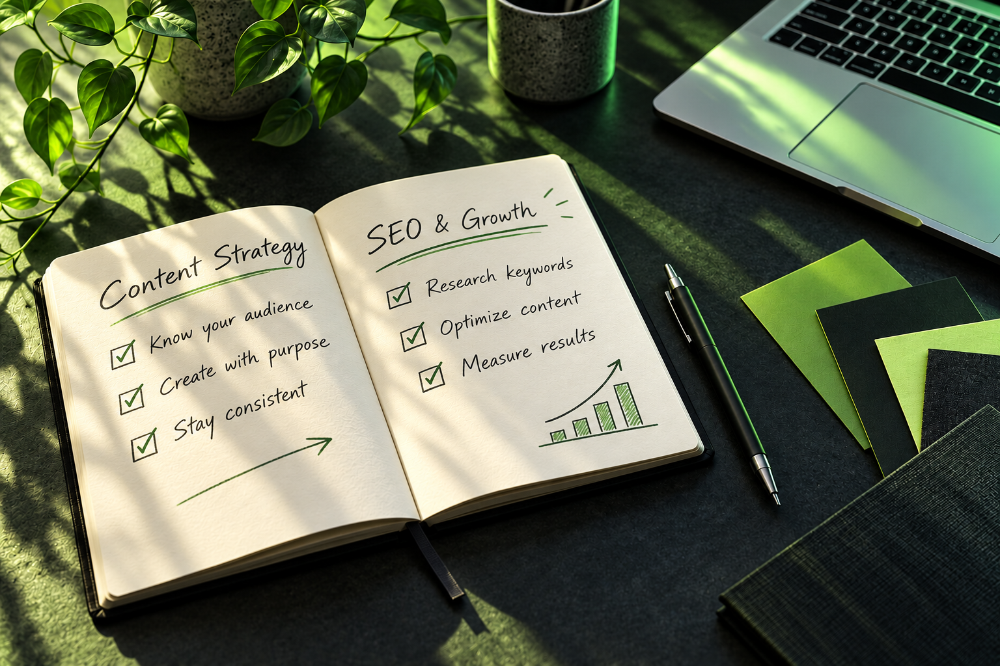

HUMNA ALI · MULTAN, PAKISTAN
Digital Marketing.
Creative Intelligence.
Digital Marketing Executive
I Help Businesses Strengthen Their Online Presence Through SEO, Social Media Content, And Creative Visuals.
SEO & Content Strategy
Generative AI & AI Image Generation
STRATEGY × AI × DESIGN
Human Creativity.
New Possibilities.
Search Visibility
Social Media Content
Creative Visuals
01 / WHAT I DO
Practical Support.
Creative Execution.
01
Search Engine Optimization
On-page And Off-page SEO, Keyword Research, And Website Content Optimization To Support Organic Search Visibility.
02
Local SEO
Google Business Profile Content, Business Listings, And Backlink Building To Strengthen A Business’s Local Online Presence.
03
Social Media Management
Content Planning, Post Creation, Scheduling, And Community Engagement For Business Social Media Accounts.
04
Content Strategy & Writing
Blog Content, Product Descriptions, And Platform-specific Social Media Copy Aligned With Business Goals And Audience Needs.
05
Visual Content Creation
Social Media Graphics, Website Banners, Product Reels, Canva Designs, And AI-generated Images.
02 / SELECTED WORK
A Closer Look At My Work.
Product Content, Social Media, And Design — Created With The Audience In Mind.
Product Content Creation · Canva
Garden Fountain Product Reel
Hi-Line Gift
Created A Promotional Reel Featuring A Contemporary Semicircle Tiered Outdoor Fountain With Warm White LED Lighting. Highlighted The Fountain’s Design, Lighting, And Use In Outdoor Spaces.
Product Content Creation
Floral Lights Collection Reel
Hi-Line Gift
Created A Product Reel Featuring Three Floral Light Designs, Using Smooth Transitions And A Coordinated Visual Style To Highlight Product Details And Decorative Appeal.
Social Media Content · Canva
Pagoda Garden Statue
Promotional Content
Created Promotional Content Showcasing A Pagoda Garden Statue For Gardens, Patios, And Outdoor Spaces. Combined Product-focused Visuals With Copy Highlighting Its Design And Styling Possibilities.
More Projects · Marketing, Design & Machine Vision
Social Media Marketing · Adobe Illustrator
Facebook Marketing Strategy
Taawun Groups
Developed A Facebook Marketing Strategy For A Construction, Contracting, And Project Management Business, Presenting Services Clearly To Support Brand Visibility And Audience Engagement.
Website Banner Design · Adobe Illustrator
Haircare Website Banner
GiftPoint
Designed A Haircare Product Banner With Clear Messaging, Visual Hierarchy, And Brand Consistency To Support Product Discovery And Complement The Website’s Design.
Image Optimization · Flow
Product Image Optimization
Web-ready Product Visuals
Reduced Image File Sizes While Preserving Visual Quality, With Attention To Loading Efficiency And Clear Product Presentation.
Academic Project · Machine Vision
Neural Style Transfer
University Of Southern Punjab, Multan
Explored How Neural Networks Combine The Content Of One Image With The Artistic Style Of Another. Resized Input Images And Adjusted Training Iterations To Refine The Generated Output.
03 / A LITTLE ABOUT ME
Strategy With A Creative Perspective.

I’m A Digital Marketing Professional With Experience In Search Engine Optimization, Social Media Management, And Content Creation.
My Work Includes Optimizing Website Content, Managing Google Business Profile Posts, Planning Social Media Content, And Supporting Local SEO Through Backlink Building. I Also Use Generative AI And AI Image Generation As Part Of My Creative Skill Set.
With A Background In Graphic Design And UI/UX And A Master’s Degree In Computer Science, I Bring Technical Understanding And Visual Communication Skills To My Marketing Work. I Continue To Develop My Expertise Through Practical Experience And Professional Training.
Understand. Create. Refine.
04 / SKILLS & TOOLS
The Skills Behind The Work.
Digital Marketing
Search Engine Optimization
On-page & Off-page SEO
Local SEO
Google Business Profile Content
Keyword Research
Social Media Management
Content Strategy & Writing
Community Engagement
Design & Creative
Social Media Graphics
Website Banners
Product Reels
Logo & Flyer Design
UI/UX Design
Generative AI
AI Image Generation
Product Image Optimization
Creative & Publishing Tools
Canva
Adobe Illustrator
Planable
Publer
Flow
Tools Covered In Training
Google Ads
Google Analytics
Google Search Console
Google Keyword Planner
Semrush
Moz
Ubersuggest
Technical Background
Computer Science
Python
MySQL
Machine Vision
Neural Style Transfer
Freelancing Skills In Development
Proposal Writing
Client Outreach
Bidding Strategies
Profile Optimization
05 / PROFESSIONAL JOURNEY
Experience & Continuous Learning.
ZKV Digital SEO And Web Design · Social Media Marketing Specialist & SEO
• Optimize Website Content, Including Blog Posts And Product Descriptions, To Support Search Visibility.
• Create, Manage, And Schedule Content For Google Business Profile, Facebook, And Instagram.
• Support Local SEO Through Backlink Building.
• Use Canva To Create Visual Content And Reels.
• Schedule Social Media Posts Using Planable And Publer.
WLEK · Search Engine Optimization Specialist
• Worked On Off-page SEO.
• Associated Projects Included A Flying Wish And Ahmad Fabrics International.
Fazzilet Consultancy Services · Social Media Manager
• Created Content For X (Twitter) Giveaway Campaigns.
• Encouraged Community Participation And Audience Interaction.
• Supported LinkedIn Page Management And Content Creation.
• Developed Social Media Content To Support Brand Awareness And Engagement.
Sparkify Solutions · Search Engine Optimization Specialist
WLEK · Search Engine Optimization Specialist
• Full-time: January–February 2025. Internship: October–December 2024.
• Worked On On-page And Off-page SEO.
• Supported Business Listings And Blog Commenting.
• Associated Projects Included Choicemall, GO-Globe, And Wrth.Studio.
Earlier Graphic Design & UI/UX Experience
Graphic Designer
Oasis Infobyte
Logo And Flyer Design.
Junior Graphic Designer
Trout Flow
Logos And Social Media Post Designs.
UI/UX Design Intern
Digital Empowerment Network
Web And Mobile Application Design.
UI/UX Design Intern
InternnCraft
Mobile And Web Application Design And Redesign.
Web User Interface Design Intern
Growintern
Web And Mobile Interface Design And Application Redesign.
Education
MS In Computer Science
University Of Southern Punjab, Multan
Focus: Machine Vision · Project: Neural Style Transfer
BS In Computer Science
University Of Southern Punjab, Multan
Relevant Skills: Python And MySQL
Certifications & Certificates
Social Media Manager
Fazzilet Consultancy Services · Issued November 2025 · Associated Skill: Content Writing
UI/UX
Alison
User Interface And User Experience (UI/UX)
Great Learning · Credential ID: 55928
Flutter
Simplilearn · Credential ID: 6249075
MERN Stack
Professional Freelancing Training Program · Credential ID: B17003317
Full Stack Web Developer
Professional Freelancing Training Program · Credential ID: B17003318
Training & Professional Development
Freelancing IT Training — NAVTTC Skills Of Tomorrow Program
Developing Practical Freelancing And Client Acquisition Skills: Profile Setup And Optimization For Upwork, Fiverr, And Freelancer.com; Proposal Writing And Bidding; Client Prospecting, Outreach, And Professional Communication.
Google Ads & PPC
Hands-on Training In Search, Display, And Video Campaigns; Keyword Research, Campaign Structure, Audience Targeting, Bidding, Budgeting, And Ad Copywriting; Ad Extensions, Quality Score, Conversion Tracking, Google Analytics Integration, Remarketing, And A/B Testing.
Advanced SEO
Training In Technical, On-page, And Off-page SEO; Keyword Research And Competitor Analysis; Audits, Crawl Issues, And Indexing; Content Optimization, Meta Tags, Internal Linking, Backlinks, And Performance Monitoring.
LET’S WORK TOGETHER
Let’s Build Your
Online Presence.
Looking For Support With SEO, Social Media Content, Or Creative Visuals? Let’s Discuss Your Business And Your Next Project.
Multan, Pakistan